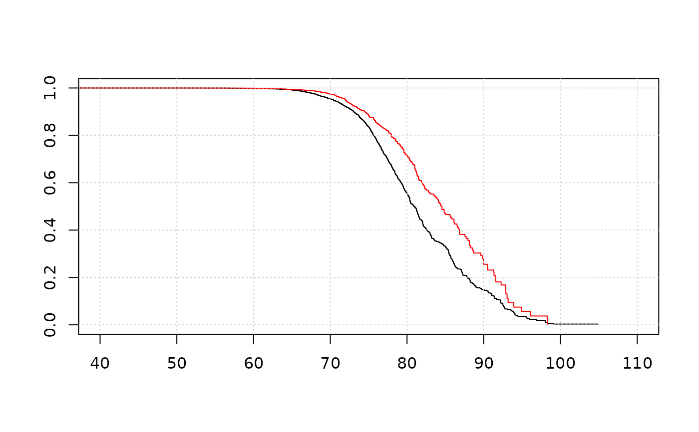

Canadian life insurance
canlifins.RdThis dataset contains information of 14,889 contracts in force with a large Canadian insurer over the period December 29, 1988 through December 31, 1993. These contracts are joint and last-survivor annuities that were in the payout status over the observation period. For each contract, we have the date of birth, date of death (if applicable) and sex of each annuitant. Binary dummies for uncensored observations and exit times are also available.
Format
canlifins is a data frame of 10 columns and 14,889 rows:
EntryAgeMEntry age of the male.
DeathTimeMTime of death of the male (zero if not applicable).
AnnuityExpiredMThe date that the annuity guarantee expired (if applicable).
IsDeadMA binary indicating uncensored observation.
ExitAgeMExit age of the male.
EntryAgeFEntry age of the female.
DeathTimeFTime of death of the female (zero if not applicable).
AnnuityExpiredFThe date that the annuity guarantee expired (if applicable).
IsDeadFA binary indicating uncensored observation.
ExitAgeFExit age of the female.
Originally in Frees et al. (1995), the dataset contains 22 contracts where both annuitants are male, 36 contracts where both annuitants are female, in addition to 14,889 contracts where one annuitant is male and the other female (so a total of 14,947 contracts).
canlifins2 is a data frame of 2 columns and 14,889 rows
with either the observed death age in canlifins or simulated death age
based on the residual survival time. Dependency between male and female is taken
into account.
DeathAgeMDeath age of the male.
DeathAgeFDeath age of the female.
References
Dataset used in Frees, Carriere and Valdez (1995), Annuity valuation with dependent mortality, Actuarial Research Clearing House 1995, Vol. 2, doi:10.2307/253744 .
Examples
# (1) load of data
#
data(canlifins)
dim(canlifins)
#> [1] 14889 10
# (2) Table 1 of Frees et al. (1995)
#
table(Age=cut(canlifins$EntryAgeM, c(0, 60, 70, 80, 120)),
Status=cut(canlifins$DeathTimeM, c(-1, 0, 10)))
#> Status
#> Age (-1,0] (0,10]
#> (0,60] 1166 42
#> (60,70] 7598 534
#> (70,80] 4347 806
#> (80,120] 224 172
table(Age=cut(canlifins$EntryAgeF, c(0, 60, 70, 80, 120)),
Status=cut(canlifins$DeathTimeF, c(-1, 0, 10)))
#> Status
#> Age (-1,0] (0,10]
#> (0,60] 2940 30
#> (60,70] 8190 238
#> (70,80] 3004 242
#> (80,120] 183 62
# (3) Figure 1 of Frees et al. (1995)
#
KMmale <- survfit(Surv(ExitAgeM, IsDeadM)~1, data=canlifins)
KMfemale <- survfit(Surv(ExitAgeF, IsDeadF)~1, data=canlifins)
plot(KMmale, xlim=c(40, 110), conf.int=FALSE)
lines(KMfemale, col="red", conf.int=FALSE)
grid()
